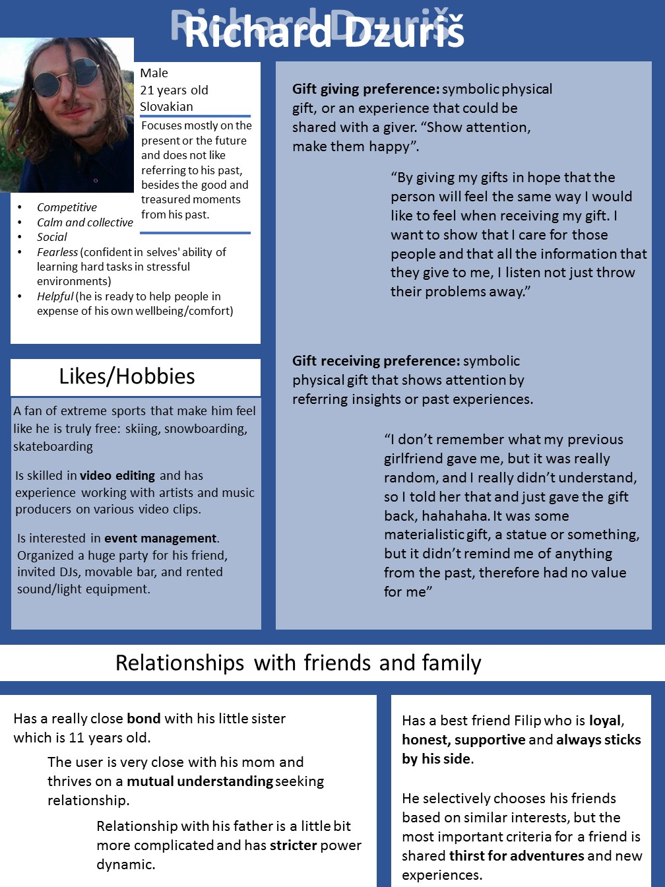

The first step was to carry out the reaserch of two people. Me and my partner had a person each which we interviewed, observed and analysed. After doing the reasech each of us gathered the data and put it together into a user's persona.

After creating user portraits of people we analyzed me and my design partner combined those portraits into users persona. We used this persona as a strating point for our design challange.
After bainstorming and a week of developing the idea we seteled on creating a card personalization tool that would allow users to create 3D monster shaped gift cards-pinjatas with a message inside that directs the receiver of the card to an online unwrapping expirience that is a game in which the user has to kill the same paper monster that hass been resurected in the digital world.
My part was to create digital unwraping expirience, so I decided to make a decision based game that is entertaining and fun. First of all I made a paper prototype of the game.


After testing my paper protoype and correcting the storry of the game I mooved on drawing the game on paper. It took very long time but it was definetely worth it. After drawing it out I scaned it and started working on it through Adobe XD


Using Adobe XD I created high-fi prototype of the monster hunter game and that was the final product of this project.